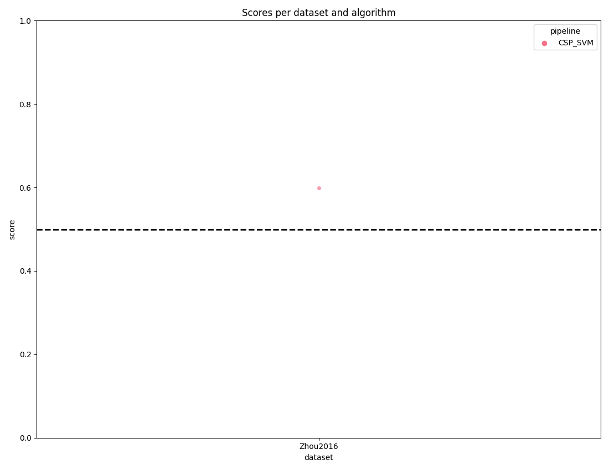

Note
Go to the end to download the full example code.
Cross-dataset motor imagery classification example.
This example demonstrates how to perform cross-dataset evaluation using MOABB, training on one dataset and testing on another.

Channels before matching:
train_dataset: ['Fz', 'FC3', 'FC1', 'FCz', 'FC2', 'FC4', 'C5', 'C3', 'C1', 'Cz', 'C2', 'C4', 'C6', 'CP3', 'CP1', 'CPz', 'CP2', 'CP4', 'P1', 'Pz', 'P2', 'POz', 'EOG1', 'EOG2', 'EOG3', 'stim']
test_dataset: ['VEOU', 'VEOL', 'Fp1', 'Fp2', 'FC3', 'FCz', 'FC4', 'C3', 'Cz', 'C4', 'CP3', 'CPz', 'CP4', 'O1', 'Oz', 'O2', 'STIM']
Matching channels across datasets...
Channels after matching:
train_dataset: ['Fz', 'FC3', 'FC1', 'FCz', 'FC2', 'FC4', 'C5', 'C3', 'C1', 'Cz', 'C2', 'C4', 'C6', 'CP3', 'CP1', 'CPz', 'CP2', 'CP4', 'P1', 'Pz', 'P2', 'POz', 'EOG1', 'EOG2', 'EOG3', 'stim']
test_dataset: ['VEOU', 'VEOL', 'Fp1', 'Fp2', 'FC3', 'FCz', 'FC4', 'C3', 'Cz', 'C4', 'CP3', 'CPz', 'CP4', 'O1', 'Oz', 'O2', 'STIM']
Common channels after matching: ['C3', 'C4', 'CP3', 'CP4', 'CPz', 'Cz', 'FC3', 'FC4', 'FCz']
Number of common channels: 9
0%| | 0.00/42.5M [00:00<?, ?B/s]
0%| | 8.19k/42.5M [00:00<10:29, 67.5kB/s]
0%| | 39.9k/42.5M [00:00<03:54, 181kB/s]
0%| | 96.3k/42.5M [00:00<02:17, 308kB/s]
0%|▏ | 201k/42.5M [00:00<01:20, 523kB/s]
1%|▍ | 424k/42.5M [00:00<00:42, 992kB/s]
2%|▊ | 864k/42.5M [00:00<00:22, 1.88MB/s]
4%|█▌ | 1.74M/42.5M [00:00<00:11, 3.62MB/s]
8%|███ | 3.51M/42.5M [00:00<00:05, 7.06MB/s]
15%|█████▋ | 6.56M/42.5M [00:01<00:02, 12.6MB/s]
21%|███████▌ | 8.72M/42.5M [00:01<00:02, 14.2MB/s]
27%|██████████ | 11.6M/42.5M [00:01<00:01, 17.1MB/s]
33%|████████████▎ | 14.2M/42.5M [00:01<00:01, 18.2MB/s]
40%|██████████████▊ | 17.0M/42.5M [00:01<00:01, 19.6MB/s]
46%|█████████████████ | 19.6M/42.5M [00:01<00:01, 20.2MB/s]
53%|███████████████████▋ | 22.5M/42.5M [00:01<00:00, 21.3MB/s]
59%|█████████████████████▉ | 25.2M/42.5M [00:01<00:00, 21.3MB/s]
66%|████████████████████████▍ | 28.0M/42.5M [00:02<00:00, 21.8MB/s]
72%|██████████████████████████▋ | 30.6M/42.5M [00:02<00:00, 21.6MB/s]
79%|█████████████████████████████ | 33.4M/42.5M [00:02<00:00, 22.0MB/s]
85%|███████████████████████████████▎ | 35.9M/42.5M [00:02<00:00, 21.7MB/s]
92%|█████████████████████████████████▉ | 38.9M/42.5M [00:02<00:00, 22.3MB/s]
98%|████████████████████████████████████ | 41.4M/42.5M [00:02<00:00, 21.9MB/s]
0%| | 0.00/42.5M [00:00<?, ?B/s]
100%|██████████████████████████████████████| 42.5M/42.5M [00:00<00:00, 241GB/s]
0%| | 0.00/44.4M [00:00<?, ?B/s]
0%| | 8.19k/44.4M [00:00<10:57, 67.5kB/s]
0%| | 39.9k/44.4M [00:00<04:05, 181kB/s]
0%| | 96.3k/44.4M [00:00<02:23, 309kB/s]
0%|▏ | 209k/44.4M [00:00<01:20, 551kB/s]
1%|▎ | 432k/44.4M [00:00<00:43, 1.01MB/s]
2%|▊ | 889k/44.4M [00:00<00:22, 1.94MB/s]
4%|█▌ | 1.80M/44.4M [00:00<00:11, 3.74MB/s]
8%|███ | 3.62M/44.4M [00:00<00:05, 7.30MB/s]
15%|█████▍ | 6.57M/44.4M [00:01<00:03, 12.5MB/s]
20%|███████▍ | 8.90M/44.4M [00:01<00:02, 14.6MB/s]
27%|█████████▊ | 11.8M/44.4M [00:01<00:01, 17.3MB/s]
36%|█████████████▏ | 15.9M/44.4M [00:01<00:01, 22.2MB/s]
43%|███████████████▊ | 18.9M/44.4M [00:01<00:01, 23.0MB/s]
49%|██████████████████▏ | 21.8M/44.4M [00:01<00:00, 23.2MB/s]
58%|█████████████████████▌ | 25.9M/44.4M [00:01<00:00, 26.3MB/s]
66%|████████████████████████▎ | 29.1M/44.4M [00:01<00:00, 27.9MB/s]
72%|██████████████████████████▋ | 32.0M/44.4M [00:02<00:00, 26.5MB/s]
80%|█████████████████████████████▌ | 35.4M/44.4M [00:02<00:00, 22.6MB/s]
89%|████████████████████████████████▊ | 39.4M/44.4M [00:02<00:00, 25.3MB/s]
95%|███████████████████████████████████ | 42.1M/44.4M [00:02<00:00, 24.2MB/s]
0%| | 0.00/44.4M [00:00<?, ?B/s]
100%|██████████████████████████████████████| 44.4M/44.4M [00:00<00:00, 274GB/s]
0%| | 0.00/44.6M [00:00<?, ?B/s]
0%| | 8.19k/44.6M [00:00<11:00, 67.4kB/s]
0%| | 39.9k/44.6M [00:00<04:06, 181kB/s]
0%| | 96.3k/44.6M [00:00<02:24, 309kB/s]
0%|▏ | 201k/44.6M [00:00<01:24, 524kB/s]
1%|▎ | 424k/44.6M [00:00<00:44, 993kB/s]
2%|▋ | 864k/44.6M [00:00<00:23, 1.88MB/s]
4%|█▍ | 1.74M/44.6M [00:00<00:11, 3.62MB/s]
8%|██▉ | 3.51M/44.6M [00:00<00:05, 7.05MB/s]
15%|█████▍ | 6.51M/44.6M [00:01<00:03, 12.5MB/s]
20%|███████▎ | 8.81M/44.6M [00:01<00:02, 14.4MB/s]
26%|█████████▋ | 11.7M/44.6M [00:01<00:01, 17.3MB/s]
32%|███████████▋ | 14.1M/44.6M [00:01<00:01, 17.8MB/s]
38%|██████████████ | 17.0M/44.6M [00:01<00:01, 19.7MB/s]
44%|████████████████▏ | 19.5M/44.6M [00:01<00:01, 19.9MB/s]
50%|██████████████████▌ | 22.4M/44.6M [00:01<00:01, 21.0MB/s]
56%|████████████████████▋ | 25.0M/44.6M [00:01<00:00, 21.1MB/s]
62%|███████████████████████ | 27.8M/44.6M [00:02<00:00, 21.7MB/s]
68%|█████████████████████████▎ | 30.5M/44.6M [00:02<00:00, 21.7MB/s]
73%|███████████████████████████ | 32.7M/44.6M [00:02<00:00, 19.9MB/s]
80%|█████████████████████████████▍ | 35.5M/44.6M [00:02<00:00, 20.9MB/s]
85%|███████████████████████████████▌ | 38.0M/44.6M [00:02<00:00, 20.7MB/s]
92%|██████████████████████████████████▏ | 41.2M/44.6M [00:02<00:00, 22.2MB/s]
98%|████████████████████████████████████▎| 43.7M/44.6M [00:02<00:00, 21.9MB/s]
0%| | 0.00/44.6M [00:00<?, ?B/s]
100%|██████████████████████████████████████| 44.6M/44.6M [00:00<00:00, 229GB/s]
0%| | 0.00/43.4M [00:00<?, ?B/s]
0%| | 8.19k/43.4M [00:00<10:43, 67.4kB/s]
0%| | 39.9k/43.4M [00:00<03:59, 181kB/s]
0%| | 96.3k/43.4M [00:00<02:20, 308kB/s]
0%|▏ | 201k/43.4M [00:00<01:22, 524kB/s]
1%|▍ | 424k/43.4M [00:00<00:43, 993kB/s]
2%|▋ | 856k/43.4M [00:00<00:22, 1.86MB/s]
4%|█▍ | 1.74M/43.4M [00:00<00:11, 3.60MB/s]
8%|██▉ | 3.49M/43.4M [00:00<00:05, 7.01MB/s]
15%|█████▍ | 6.30M/43.4M [00:01<00:03, 12.0MB/s]
20%|███████▎ | 8.58M/43.4M [00:01<00:02, 14.0MB/s]
26%|█████████▊ | 11.4M/43.4M [00:01<00:01, 16.9MB/s]
32%|███████████▋ | 13.7M/43.4M [00:01<00:01, 17.5MB/s]
41%|███████████████▏ | 17.8M/43.4M [00:01<00:01, 22.4MB/s]
49%|█████████████████▉ | 21.1M/43.4M [00:01<00:00, 23.6MB/s]
55%|████████████████████▏ | 23.7M/43.4M [00:01<00:00, 22.9MB/s]
63%|███████████████████████▍ | 27.4M/43.4M [00:01<00:00, 25.2MB/s]
71%|██████████████████████████▎ | 30.9M/43.4M [00:02<00:00, 26.1MB/s]
78%|████████████████████████████▊ | 33.7M/43.4M [00:02<00:00, 25.3MB/s]
86%|███████████████████████████████▊ | 37.2M/43.4M [00:02<00:00, 26.3MB/s]
94%|██████████████████████████████████▋ | 40.7M/43.4M [00:02<00:00, 27.0MB/s]
0%| | 0.00/43.4M [00:00<?, ?B/s]
100%|██████████████████████████████████████| 43.4M/43.4M [00:00<00:00, 242GB/s]
0%| | 0.00/42.8M [00:00<?, ?B/s]
0%| | 8.19k/42.8M [00:00<10:34, 67.5kB/s]
0%| | 39.9k/42.8M [00:00<03:56, 181kB/s]
0%| | 96.3k/42.8M [00:00<02:18, 308kB/s]
0%|▏ | 209k/42.8M [00:00<01:17, 550kB/s]
1%|▍ | 432k/42.8M [00:00<00:41, 1.01MB/s]
2%|▊ | 889k/42.8M [00:00<00:21, 1.94MB/s]
4%|█▌ | 1.78M/42.8M [00:00<00:11, 3.67MB/s]
8%|███ | 3.58M/42.8M [00:00<00:05, 7.19MB/s]
16%|█████▊ | 6.74M/42.8M [00:01<00:02, 13.0MB/s]
22%|████████ | 9.35M/42.8M [00:01<00:02, 15.6MB/s]
30%|███████████ | 12.7M/42.8M [00:01<00:01, 19.3MB/s]
37%|█████████████▊ | 16.0M/42.8M [00:01<00:01, 21.6MB/s]
44%|████████████████▍ | 19.0M/42.8M [00:01<00:01, 22.3MB/s]
54%|███████████████████▉ | 23.1M/42.8M [00:01<00:00, 25.7MB/s]
62%|███████████████████████ | 26.7M/42.8M [00:01<00:00, 28.3MB/s]
69%|█████████████████████████▌ | 29.5M/42.8M [00:01<00:00, 26.8MB/s]
75%|███████████████████████████▉ | 32.3M/42.8M [00:02<00:00, 26.2MB/s]
84%|███████████████████████████████ | 36.0M/42.8M [00:02<00:00, 27.5MB/s]
92%|██████████████████████████████████ | 39.4M/42.8M [00:02<00:00, 27.5MB/s]
99%|████████████████████████████████████▋| 42.5M/42.8M [00:02<00:00, 26.9MB/s]
0%| | 0.00/42.8M [00:00<?, ?B/s]
100%|██████████████████████████████████████| 42.8M/42.8M [00:00<00:00, 240GB/s]
0%| | 0.00/42.2M [00:00<?, ?B/s]
0%| | 8.19k/42.2M [00:00<10:25, 67.5kB/s]
0%| | 39.9k/42.2M [00:00<03:53, 181kB/s]
0%| | 96.3k/42.2M [00:00<02:16, 309kB/s]
0%|▏ | 201k/42.2M [00:00<01:20, 524kB/s]
1%|▍ | 424k/42.2M [00:00<00:42, 994kB/s]
2%|▊ | 864k/42.2M [00:00<00:21, 1.88MB/s]
4%|█▌ | 1.74M/42.2M [00:00<00:11, 3.62MB/s]
8%|███ | 3.51M/42.2M [00:00<00:05, 7.07MB/s]
15%|█████▋ | 6.47M/42.2M [00:01<00:02, 12.4MB/s]
20%|███████▌ | 8.65M/42.2M [00:01<00:02, 14.1MB/s]
27%|██████████ | 11.5M/42.2M [00:01<00:01, 16.9MB/s]
33%|████████████ | 13.8M/42.2M [00:01<00:01, 17.4MB/s]
39%|██████████████▌ | 16.6M/42.2M [00:01<00:01, 19.1MB/s]
45%|████████████████▌ | 18.9M/42.2M [00:01<00:01, 19.1MB/s]
51%|██████████████████▉ | 21.6M/42.2M [00:01<00:01, 20.1MB/s]
57%|█████████████████████ | 24.0M/42.2M [00:01<00:00, 19.9MB/s]
63%|███████████████████████▍ | 26.7M/42.2M [00:02<00:00, 20.5MB/s]
69%|█████████████████████████▌ | 29.1M/42.2M [00:02<00:00, 20.3MB/s]
75%|███████████████████████████▊ | 31.8M/42.2M [00:02<00:00, 20.7MB/s]
81%|█████████████████████████████▉ | 34.2M/42.2M [00:02<00:00, 20.5MB/s]
87%|████████████████████████████████▎ | 36.9M/42.2M [00:02<00:00, 20.9MB/s]
93%|██████████████████████████████████▍ | 39.3M/42.2M [00:02<00:00, 20.6MB/s]
0%| | 0.00/42.2M [00:00<?, ?B/s]
100%|██████████████████████████████████████| 42.2M/42.2M [00:00<00:00, 207GB/s]
0%| | 0.00/45.0M [00:00<?, ?B/s]
0%| | 8.19k/45.0M [00:00<11:08, 67.4kB/s]
0%| | 39.9k/45.0M [00:00<04:09, 181kB/s]
0%| | 88.1k/45.0M [00:00<02:41, 278kB/s]
0%|▏ | 201k/45.0M [00:00<01:24, 531kB/s]
1%|▎ | 337k/45.0M [00:00<01:00, 741kB/s]
2%|▌ | 696k/45.0M [00:00<00:29, 1.49MB/s]
3%|█ | 1.31M/45.0M [00:00<00:16, 2.65MB/s]
6%|██▏ | 2.64M/45.0M [00:00<00:08, 5.25MB/s]
11%|████ | 4.91M/45.0M [00:01<00:04, 9.41MB/s]
17%|██████ | 7.45M/45.0M [00:01<00:02, 12.9MB/s]
22%|████████ | 9.85M/45.0M [00:01<00:02, 14.9MB/s]
27%|██████████▏ | 12.3M/45.0M [00:01<00:01, 16.6MB/s]
33%|████████████ | 14.8M/45.0M [00:01<00:01, 17.5MB/s]
38%|██████████████▏ | 17.3M/45.0M [00:01<00:01, 18.6MB/s]
44%|████████████████▏ | 19.7M/45.0M [00:01<00:01, 18.8MB/s]
50%|██████████████████▎ | 22.3M/45.0M [00:01<00:01, 19.6MB/s]
55%|████████████████████▎ | 24.7M/45.0M [00:02<00:01, 19.6MB/s]
61%|██████████████████████▍ | 27.3M/45.0M [00:02<00:00, 20.1MB/s]
66%|████████████████████████▍ | 29.7M/45.0M [00:02<00:00, 20.0MB/s]
72%|██████████████████████████▌ | 32.3M/45.0M [00:02<00:00, 20.3MB/s]
77%|████████████████████████████▌ | 34.7M/45.0M [00:02<00:00, 20.1MB/s]
83%|██████████████████████████████▋ | 37.3M/45.0M [00:02<00:00, 20.4MB/s]
88%|████████████████████████████████▋ | 39.8M/45.0M [00:02<00:00, 20.3MB/s]
94%|██████████████████████████████████▊ | 42.3M/45.0M [00:02<00:00, 20.6MB/s]
100%|████████████████████████████████████▊| 44.9M/45.0M [00:03<00:00, 20.5MB/s]
0%| | 0.00/45.0M [00:00<?, ?B/s]
100%|██████████████████████████████████████| 45.0M/45.0M [00:00<00:00, 276GB/s]
0%| | 0.00/46.3M [00:00<?, ?B/s]
0%| | 8.19k/46.3M [00:00<11:25, 67.5kB/s]
0%| | 39.9k/46.3M [00:00<04:15, 181kB/s]
0%| | 96.3k/46.3M [00:00<02:29, 309kB/s]
0%|▏ | 209k/46.3M [00:00<01:23, 551kB/s]
1%|▎ | 432k/46.3M [00:00<00:45, 1.01MB/s]
2%|▋ | 889k/46.3M [00:00<00:23, 1.94MB/s]
4%|█▍ | 1.80M/46.3M [00:00<00:11, 3.74MB/s]
8%|██▉ | 3.62M/46.3M [00:00<00:05, 7.30MB/s]
14%|█████ | 6.40M/46.3M [00:01<00:03, 12.1MB/s]
18%|██████▊ | 8.49M/46.3M [00:01<00:02, 13.7MB/s]
24%|████████▉ | 11.3M/46.3M [00:01<00:02, 16.4MB/s]
29%|██████████▋ | 13.4M/46.3M [00:01<00:01, 16.8MB/s]
35%|████████████▉ | 16.2M/46.3M [00:01<00:01, 18.5MB/s]
40%|██████████████▋ | 18.4M/46.3M [00:01<00:01, 18.4MB/s]
45%|████████████████▊ | 21.0M/46.3M [00:01<00:01, 19.3MB/s]
50%|██████████████████▋ | 23.3M/46.3M [00:01<00:01, 19.2MB/s]
56%|████████████████████▋ | 25.9M/46.3M [00:02<00:01, 19.7MB/s]
65%|███████████████████████▉ | 30.0M/46.3M [00:02<00:00, 23.9MB/s]
71%|██████████████████████████▎ | 32.8M/46.3M [00:02<00:00, 23.7MB/s]
77%|████████████████████████████▍ | 35.5M/46.3M [00:02<00:00, 23.1MB/s]
85%|███████████████████████████████▍ | 39.3M/46.3M [00:02<00:00, 25.5MB/s]
91%|█████████████████████████████████▊ | 42.3M/46.3M [00:02<00:00, 25.2MB/s]
98%|████████████████████████████████████▎| 45.4M/46.3M [00:02<00:00, 26.6MB/s]
0%| | 0.00/46.3M [00:00<?, ?B/s]
100%|██████████████████████████████████████| 46.3M/46.3M [00:00<00:00, 270GB/s]
0%| | 0.00/44.8M [00:00<?, ?B/s]
0%| | 8.19k/44.8M [00:00<11:05, 67.3kB/s]
0%| | 39.9k/44.8M [00:00<04:07, 180kB/s]
0%| | 96.3k/44.8M [00:00<02:25, 308kB/s]
0%|▏ | 201k/44.8M [00:00<01:25, 521kB/s]
1%|▎ | 424k/44.8M [00:00<00:44, 989kB/s]
2%|▋ | 856k/44.8M [00:00<00:23, 1.85MB/s]
4%|█▍ | 1.73M/44.8M [00:00<00:12, 3.57MB/s]
8%|██▊ | 3.47M/44.8M [00:00<00:05, 6.93MB/s]
15%|█████▍ | 6.54M/44.8M [00:01<00:03, 12.6MB/s]
19%|███████▏ | 8.63M/44.8M [00:01<00:02, 14.0MB/s]
26%|█████████▋ | 11.7M/44.8M [00:01<00:01, 17.3MB/s]
31%|███████████▌ | 13.9M/44.8M [00:01<00:01, 17.6MB/s]
38%|█████████████▉ | 16.9M/44.8M [00:01<00:01, 19.5MB/s]
43%|███████████████▊ | 19.2M/44.8M [00:01<00:01, 19.3MB/s]
49%|██████████████████▏ | 22.0M/44.8M [00:01<00:01, 20.5MB/s]
54%|███████████████████▊ | 24.0M/44.8M [00:01<00:01, 18.6MB/s]
59%|█████████████████████▋ | 26.2M/44.8M [00:02<00:00, 19.1MB/s]
65%|████████████████████████ | 29.1M/44.8M [00:02<00:00, 20.5MB/s]
72%|██████████████████████████▍ | 32.1M/44.8M [00:02<00:00, 21.5MB/s]
78%|████████████████████████████▉ | 35.0M/44.8M [00:02<00:00, 22.3MB/s]
85%|███████████████████████████████▍ | 38.0M/44.8M [00:02<00:00, 23.0MB/s]
92%|█████████████████████████████████▉ | 41.1M/44.8M [00:02<00:00, 23.5MB/s]
99%|████████████████████████████████████▍| 44.1M/44.8M [00:02<00:00, 23.9MB/s]
0%| | 0.00/44.8M [00:00<?, ?B/s]
100%|██████████████████████████████████████| 44.8M/44.8M [00:00<00:00, 211GB/s]
0%| | 0.00/44.8M [00:00<?, ?B/s]
0%| | 8.19k/44.8M [00:00<11:03, 67.4kB/s]
0%| | 39.9k/44.8M [00:00<04:07, 181kB/s]
0%| | 96.3k/44.8M [00:00<02:24, 309kB/s]
0%|▏ | 209k/44.8M [00:00<01:20, 551kB/s]
1%|▎ | 432k/44.8M [00:00<00:43, 1.01MB/s]
2%|▊ | 889k/44.8M [00:00<00:22, 1.94MB/s]
4%|█▍ | 1.80M/44.8M [00:00<00:11, 3.74MB/s]
8%|██▉ | 3.62M/44.8M [00:00<00:05, 7.30MB/s]
15%|█████▍ | 6.56M/44.8M [00:01<00:03, 12.5MB/s]
22%|███████▉ | 9.64M/44.8M [00:01<00:02, 16.4MB/s]
29%|██████████▋ | 12.9M/44.8M [00:01<00:01, 19.5MB/s]
36%|█████████████▎ | 16.2M/44.8M [00:01<00:01, 21.8MB/s]
43%|███████████████▉ | 19.4M/44.8M [00:01<00:01, 23.1MB/s]
50%|██████████████████▋ | 22.6M/44.8M [00:01<00:00, 24.0MB/s]
58%|█████████████████████▍ | 25.9M/44.8M [00:01<00:00, 25.1MB/s]
65%|████████████████████████ | 29.1M/44.8M [00:01<00:00, 25.4MB/s]
72%|██████████████████████████▋ | 32.3M/44.8M [00:02<00:00, 25.7MB/s]
80%|█████████████████████████████▌ | 35.7M/44.8M [00:02<00:00, 26.2MB/s]
87%|████████████████████████████████▏ | 38.9M/44.8M [00:02<00:00, 26.3MB/s]
94%|██████████████████████████████████▉ | 42.2M/44.8M [00:02<00:00, 26.5MB/s]
0%| | 0.00/44.8M [00:00<?, ?B/s]
100%|██████████████████████████████████████| 44.8M/44.8M [00:00<00:00, 199GB/s]
Cross-dataset score: 0.598
Cross-dataset evaluation scores:
dataset score time
0 Zhou2016 0.598333 3.806287
# Standard library imports
import logging
from typing import List
# Third-party imports
import matplotlib.pyplot as plt
import mne
import numpy as np
import pandas as pd
from mne.io import RawArray
from mne.io.cnt.cnt import RawCNT
from pyriemann.estimation import Covariances
from pyriemann.spatialfilters import CSP
from sklearn.pipeline import Pipeline
from sklearn.preprocessing import FunctionTransformer
from sklearn.svm import SVC
# MOABB imports
from moabb import set_log_level
from moabb.analysis.plotting import score_plot
from moabb.datasets import BNCI2014001, Zhou2016
from moabb.evaluations.evaluations import CrossDatasetEvaluation
from moabb.paradigms import MotorImagery
# Configure logging
set_log_level("WARNING")
logging.getLogger("mne").setLevel(logging.ERROR)
def create_pipeline(common_channels: List[str]) -> Pipeline:
"""Create classification pipeline with CSP and SVM.
Parameters
----------
common_channels : List[str]
List of channel names to use in the pipeline
Returns
-------
Pipeline
Sklearn pipeline for classification
"""
def raw_to_data(X: np.ndarray) -> np.ndarray:
"""Convert raw MNE data to numpy array format.
Parameters
----------
X : np.ndarray or mne.io.Raw
Input data to convert
Returns
-------
np.ndarray
Converted data array
"""
if hasattr(X, "get_data"):
picks = mne.pick_channels(
X.info["ch_names"], include=common_channels, ordered=True
)
data = X.get_data()
if data.ndim == 2:
data = data.reshape(1, *data.shape)
data = data[:, picks, :]
return data
return X
pipeline = Pipeline(
[
("to_array", FunctionTransformer(raw_to_data)),
("covariances", Covariances(estimator="oas")),
("csp", CSP(nfilter=4, log=True)),
("classifier", SVC(kernel="rbf", C=0.1)),
]
)
return pipeline
# Define datasets
train_dataset = BNCI2014001()
test_dataset = Zhou2016()
# Create a dictionary of datasets for easier handling
datasets_dict = {"train_dataset": train_dataset, "test_dataset": test_dataset}
# Get the list of channels from each dataset before matching
print("\nChannels before matching:")
for ds_name, ds in datasets_dict.items():
try:
# Load data for first subject to get channel information
data = ds.get_data([ds.subject_list[0]]) # Get data for first subject
first_subject = list(data.keys())[0]
first_session = list(data[first_subject].keys())[0]
first_run = list(data[first_subject][first_session].keys())[0]
run_data = data[first_subject][first_session][first_run]
if isinstance(run_data, (RawArray, RawCNT)):
channels = run_data.info["ch_names"]
else:
# Assuming the channels are stored in the dataset class after loading
channels = ds.channels
print(f"{ds_name}: {channels}")
except Exception as e:
print(f"Error getting channels for {ds_name}: {str(e)}")
# Use MOABB's match_all for channel handling
print("\nMatching channels across datasets...")
paradigm = MotorImagery()
# Apply match_all to all datasets
all_datasets = list(datasets_dict.values())
paradigm.match_all(all_datasets, channel_merge_strategy="intersect")
# Get channels from all datasets after matching to ensure we have the correct intersection
all_channels_after_matching = []
print("\nChannels after matching:")
for i, (ds_name, _) in enumerate(datasets_dict.items()):
ds = all_datasets[i] # Get the matched dataset
try:
data = ds.get_data([ds.subject_list[0]])
subject = list(data.keys())[0]
session = list(data[subject].keys())[0]
run = list(data[subject][session].keys())[0]
run_data = data[subject][session][run]
if isinstance(run_data, (RawArray, RawCNT)):
channels = run_data.info["ch_names"]
else:
channels = ds.channels
all_channels_after_matching.append(set(channels))
print(f"{ds_name}: {channels}")
except Exception as e:
print(f"Error getting channels for {ds_name} after matching: {str(e)}")
# Get the intersection of all channel sets
common_channels = sorted(list(set.intersection(*all_channels_after_matching)))
print(f"\nCommon channels after matching: {common_channels}")
print(f"Number of common channels: {len(common_channels)}")
# Update the datasets_dict with the matched datasets
for i, (name, _) in enumerate(datasets_dict.items()):
datasets_dict[name] = all_datasets[i]
train_dataset = datasets_dict["train_dataset"]
test_dataset = datasets_dict["test_dataset"]
# Initialize the paradigm with common channels
paradigm = MotorImagery(channels=common_channels, n_classes=2, fmin=8, fmax=32)
# Initialize the CrossDatasetEvaluation
evaluation = CrossDatasetEvaluation(
paradigm=paradigm,
train_dataset=train_dataset,
test_dataset=test_dataset,
hdf5_path="./res_test",
save_model=True,
)
# Run the evaluation
results = []
for result in evaluation.evaluate(
dataset=None, pipelines={"CSP_SVM": create_pipeline(common_channels)}
):
result["subject"] = "all"
print(f"Cross-dataset score: {result.get('score', 'N/A'):.3f}")
results.append(result)
# Convert results to DataFrame and process
results_df = pd.DataFrame(results)
results_df["dataset"] = results_df["dataset"].apply(lambda x: x.__class__.__name__)
# Print evaluation scores
print("\nCross-dataset evaluation scores:")
print(results_df[["dataset", "score", "time"]])
# Plot the results
score_plot(results_df)
plt.show()
Total running time of the script: (1 minutes 38.453 seconds)
Estimated memory usage: 1138 MB